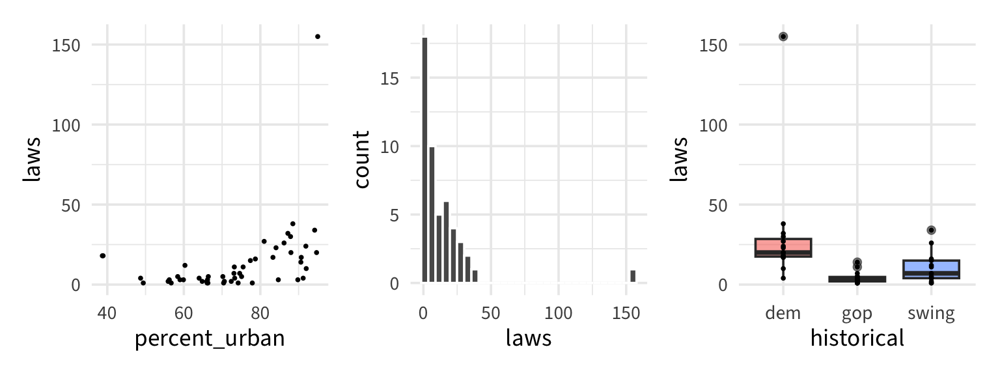
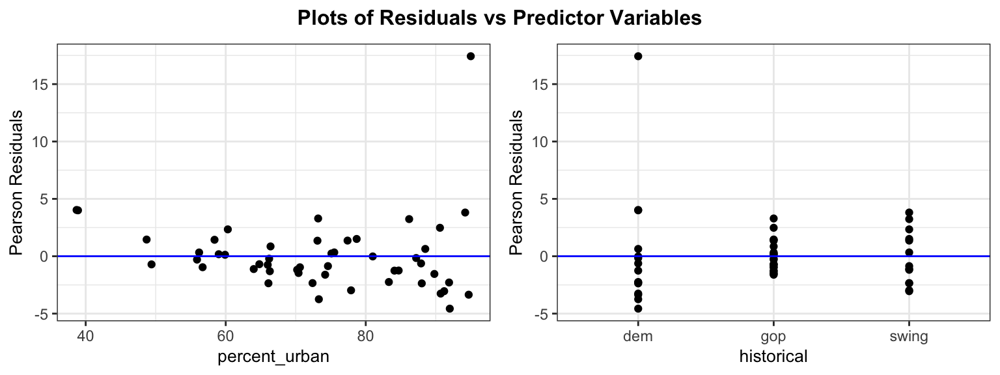
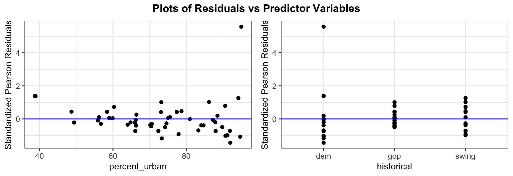

Call:
glm(formula = laws ~ percent_urban + historical, family = poisson,
data = equality_index)
Coefficients:
Estimate Std. Error z value Pr(>|z|)
(Intercept) 0.759017 0.326858 2.322 0.0202 *
percent_urban 0.031358 0.003723 8.423 < 2e-16 ***
historicalgop -1.612143 0.133244 -12.099 < 2e-16 ***
historicalswing -0.828788 0.101472 -8.168 3.14e-16 ***
---
Signif. codes: 0 '***' 0.001 '**' 0.01 '*' 0.05 '.' 0.1 ' ' 1
(Dispersion parameter for poisson family taken to be 1)
Null deviance: 962.66 on 49 degrees of freedom
Residual deviance: 413.49 on 46 degrees of freedom
AIC: 608.83
Number of Fisher Scoring iterations: 5Overdispersion and Inference for Poisson Regression
Day 27
Prof Amanda Luby
Carleton College
Stat 230 - Spring 2026
Motivating data: number of anti-discrimination laws
The equality_index data includes the observed number of anti-discrimination laws in each state, \(Y\) . We are interested in modeling \(Y\) by a state’s percent_urban and its historical presidential voting patterns. The historical variable has 3 levels:
dem= the state typically votes for the Democratic candidategop= the state typically votes for the Republican (GOP) candidateswing= the state often swings back and forth between Democratic and Republican candidates
Source: the {bayesrules} R package
EDA

lawsis skewed- as percent urban increases, laws also increases
demandswinggenerally have more laws thangop
Review: Poisson regression model
If \(Y_i =\) # of events in a fixed interval of time/space, then \(Y_i \sim \text{Poisson}(\lambda)\)
This leads to the Poisson regression model for counts:
\[\log(\lambda) = \beta_0 + \beta_1 X_1 + \cdots + \beta_p X_p\]
or equivalently
\[\lambda = e^{\beta_0 + \beta_1 X_1 + \cdots + \beta_p X_p}\]
Assumptions
Linearity: the log of the mean of Y, \(\log(\lambda)\), must be a linear function of the predictors
Mean = Variance: the mean of a Poisson random variable must be equal to its variance
Independence: the observations must be independent
Model fitting
Pearson residuals
\[Pres_i = \frac{Y_i - \widehat{\text{mean}(Y_i)}}{\widehat{SD(Y_i)}}\]

For Poisson model
\[Pres_i = \frac{Y_i - \widehat \mu_i}{\widehat{SD(Y_i)}}\]
- Mean = \(\widehat \lambda\), SD = \(\sqrt{\widehat \lambda}\)
- Pearson residual: \(\frac{Y_i - \widehat \lambda_i}{\sqrt{\widehat \lambda_i}}\)
- If \(\widehat\lambda\)’s are “big” (\(\ge 5\)), Pearson residuals are \(\approx N(0,1)\) if Poisson model is correct. Can use to diagnose problems with linearity
- If overdispersed, then SD of Pearson residuals is \(>1\)
Goodness of Fit test
\(H_0\): The Poisson model fits the data adequately.
\(H_A\): The Poisson model is deficient (a more complex, saturated model is required).
The Residual Deviance (\(D\)) serves as our test statistic: \[D = 2 \sum_{i=1}^n \left[ y_i \log\left(\frac{y_i}{\widehat{\lambda}_i}\right) - (y_i - \widehat{\lambda}_i) \right]\]
Under \(H_0\), \(D \sim \chi^2\) distribution with \(df = n - (p + 1)\).
Are means big enough for GoF test?
Min. 1st Qu. Median Mean 3rd Qu. Max.
1.962 3.532 7.267 13.460 20.429 42.016 Quasipoisson model
Call:
glm(formula = laws ~ percent_urban + historical, family = quasipoisson,
data = equality_index)
Coefficients:
Estimate Std. Error t value Pr(>|t|)
(Intercept) 0.75902 1.09483 0.693 0.491625
percent_urban 0.03136 0.01247 2.515 0.015471 *
historicalgop -1.61214 0.44631 -3.612 0.000748 ***
historicalswing -0.82879 0.33989 -2.438 0.018672 *
---
Signif. codes: 0 '***' 0.001 '**' 0.01 '*' 0.05 '.' 0.1 ' ' 1
(Dispersion parameter for quasipoisson family taken to be 11.2196)
Null deviance: 962.66 on 49 degrees of freedom
Residual deviance: 413.49 on 46 degrees of freedom
AIC: NA
Number of Fisher Scoring iterations: 5Pearson resids still show overdispersion
Since they use the Poisson mean/sd

Standardized Pearson residuals
Use quasi versions of SD: \(SD(Y_i) = \sqrt{\psi \lambda_i}\) (also adjusts for leverage)

→ better! perhaps one outlier we’d want to investigate further
Inference for coefficients
Confidence interval for \(\beta\):
- For Poisson model: \(\widehat \beta \pm z^* SE(\widehat\beta)\)
- For Quasi model: \(\widehat \beta \pm t_{n-(p+1)}^* SE_{quasi}(\widehat\beta)\)
Hypothesis testing for \(H_0: \beta = 0\) against \(H_A: \beta \ne 0\)
- Test stat: \(\frac{\widehat \beta - 0}{SE}\)
- \(\sim N(0,1)\) under Poisson model
- \(\sim t_{n-(p+1)}\) under Quasi model
Confidence Intervals: Interpretation
We construct intervals on the log (link) scale first, then exponentiate:
\[\text{Log scale:} \quad \hat{\beta}_j \pm z^* \cdot SE(\hat{\beta}_j)\] \[\text{Count/Response scale:} \quad e^{\hat{\beta}_j \pm z^* \cdot SE(\hat{\beta}_j)}\]
→ We are \((1-\alpha)\times100\%\) confident that a 1-unit increase in \(X_j\) is associated with a multiplicative change in the expected count by a factor between \(e^L\) and \(e^U\), holding all other variables constant.
Inference for \(\lambda\)
Reminder: \(\log \lambda = \eta\)
- Compute the predicted value and standard error on the link (log) scale: \[\widehat{\eta} = \widehat{\beta}_0 + \widehat{\beta}_1 X_1 + \dots + \widehat{\beta}_p X_p\]
- Build the interval on the log scale: \([\widehat{\eta} - z^*SE, \,\, \widehat{\eta} + z^*SE]\)
- Exponentiate the endpoints to map back to the original count scale: \[\left[ e^{\widehat{\eta} - z^*SE}, \,\, e^{\widehat{\eta} + z^*SE} \right]\]
In R:
Example: link scale
Minnesota historically votes dem and has 73.3% of the population in urban areas.
\(3.06 \pm 2\cdot .07 = [2.92, 3.20] \to [e^{2.92}, e^{3.20}] = [18.54, 24.53]\)
Example: response scale
\(21.275 \pm 2\cdot 1.47 = [18.33, 24.22]\)
→ We are 95% confident that the average number of anti-discrimination laws in states like Minnesota is between 18.33 and 24.22
Likelihood Ratio Test
Hypotheses:
\(H_0: \beta_i = \beta_j = ... = 0\)
\(H_A\): at least one \(\ne\) 0
Test Statistic:
\[\Delta = D_{\text{Reduced}} - D_{\text{Full}}\]
Reference distribution:
- Depends on standard poisson vs quasipoisson
LRT reference distribution
Standard Poisson GLM: We compare \(\Delta\) to a \(\chi^2\) distribution with \(df = \Delta p\).
Quasipoisson GLM: Variance has been inflated by \(\widehat{\psi}\). Instead, we scale the drop in deviance and perform an F-test:
R automatically handles the scale adjustment when you ask for test = “F”: